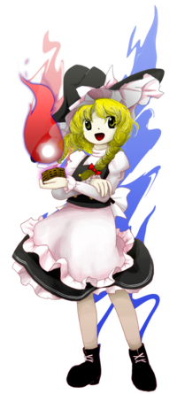
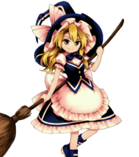

- Welcome to Touhou Wiki!
- Please register to edit. For assistance, check in with our Discord server or IRC channel.
Marisa Kirisame
Marisa Kirisame kiɾisa̠me̞ ma̠ɾisa̠ (♫) | |
|---|---|
|
Marisa Kirisame in Wily Beast and Weakest Creature Ordinary MagicianMore Character Titles | |
| Species | |
| Abilities |
Using magic (Specialized in light and heat magic) |
| Age |
A child in PC-98 canon; about the same age as Reimu in Windows canon[1] |
| Occupation |
Magician, Kirisame Magic Shop owner, burglar, part-time youkai hunter |
| Location |
The Kirisame household in the Forest of Magic, unknown in PC-98 |
Music Themes | |
| |
Appearances | |
| Official Games | |
| |
| Print Works | |
| |
| Music CDs | |
| |
| Miscellaneous Works | |
|
Miscellaneous Illustrations
| |
| Other | |
| |
Marisa Kirisame (霧雨 魔理沙 Kirisame Marisa) is an ordinary human magician who specializes in light and heat magic and currently resides in the Forest of Magic. Her motto is: "It ain't magic if it ain't flashy. Danmaku's all about firepower,"[2] and she has a compulsive mania for collecting things. She's considered to be the deuteragonist of the Touhou Project series along with the main protagonist, Reimu Hakurei.
General Information[edit]
Marisa is a common playable character in most subsequent games throughout the series with somewhat rare alternative roles such as being an Extra stage boss. Her first ever appearance in the Touhou Project was in the second PC-98 game Story of Eastern Wonderland. Additionally, she has made a guest appearance as the first Extra stage boss in the Seihou Project's first work Shuusou Gyoku.
Marisa serves as an audience surrogate of sorts - she is straight-forward and much easier to understand than other characters, typically filling the support role. She also serves as contrast to Reimu, who's blessed with innate abilities, by being the hard-working type of character without any special powers. ZUN has said that this makes her a rather "un-Touhou-like" character, but also gives him much more leeway in creating a story.[3][4]
Marisa's height is that of a girl in her early teens and is in the "fairly short" group.[5]. Unlike Patchouli Knowledge and Alice Margatroid, who are magicians by species, she's merely an ordinary human who uses magic. In the games themselves, she's a character who consistently stresses high power and quick speed. She exceeds in attack and penetration power, but her attack range is generally narrow. Her signature move is the tremendous laser spell card, Love Sign "Master Spark". She has good speed and power, but poor melee technique.[6]
Personality[edit]
Marisa is very straightforward and informal with everyone. She can be condescending, as if trying to make fool of others, and often has difficulty expressing sympathy.[2] She's often unyielding and uncooperative. She has a mania for collecting things and may have a hoarding disorder. She's quick to act if she hears anything interesting. Marisa is also a habitual liar, but she makes no effort to actually deceive anyone as her lies are extremely obvious. She puts more thought into her words than Reimu, and occasionally has to caution the shrine maiden from accidentally spilling the truth at an inopportune time[7]. In later appearances, Marisa has revealed that she does care about the wellbeing of Gensokyo, but she conceals it underneath her usual rowdy self.
Marisa is very hard-working, but she goes to great lengths to not show that side of hers to others.[2] She claims to be "the number two in Gensokyo"[8] and takes great pride in her magical prowess, believing that she will be known as a great witch, sparing no effort to achieve that goal.[9]
Unlike most characters, Marisa is known to use a distinct speech tone. The most typical and known example of this is the use of the sentence ending particle ze (ぜ). "Ze" used at the end of verb stems delivers a "boyish" and "impolite" sound to the listener/reader. Ze is mostly used in a context to express one's will to act (similar to "let's" in English), and using it in other cases sound somewhat unnatural, perhaps "phony" or "showy". In the PC-98 games, she is initially more feminine (in Story of Eastern Wonderland, she uses the effeminate atai (あたい) to refer to herself, and her laughs are represented as a girlish "kyahaha!"), but her tone became more similar to her current manner of speech by the time of Mystic Square. One source of influence could've been Chiyuri Kitashirakawa, whose speaking style is quite similar to Marisa's.
Occupation[edit]
It isn't directly stated how Marisa makes a living. She does state in Strange and Bright Nature Deity's 9th chapter that she regularly goes to the Hakurei Shrine to take away Reimu's youkai extermination jobs and Perfect Memento in Strict Sense implies it as well, making it a likely source of income. She's also written a book called The Grimoire of Marisa that reviews various spell cards by different owners of a spell; she's shown a desire to try and sell the book.[10][11]
- Kirisame Magic Shop
Marisa runs a shop for anything as an attachment to her own house. Although it's her primary occupation, she's usually absent. Inside the shop, it's so unimaginably disordered that it becomes like a mini-Forest of Magic.[2]
Perfect Memento in Strict Sense provides some information on the magic shop.[2] Though Marisa is surprisingly honest with her services, refusing to take payment for a failed job, the shop sees little use due to its difficult-to-find location in the Forest of Magic and the ambiguity of what her services actually are. (In Touhou Sangetsusei, on the Kirisame Magic Shop's signboard, other than the shop name, nothing is written but "what will you do" (なんかします).) The Three Fairies of Light were her first customers to her shop, but Perfect Memento in Strict Sense implies she's had other customers since then, albeit not many.
- Burglary
According to Perfect Memento in Strict Sense, Marisa boldly breaks in from the front and openly says her motto "I'll be borrowing these!" while carrying things off. She mostly steals books, so she might not be the kind who steals money. Her ability to "learn other people's moves" might originate from her nature as a thief.
As opposed to how she was commented to be a "prowler" in Bohemian Archive in Japanese Red, Marisa said: "My life is way shorter than yours anyway, so can't you just take back everythin' after I kick the bucket? I'm just borrowin' until then. It should be good for the stuff I'm taking that way, too." Aya Shameimaru's response was "The contents of the excerpt are very human-like and childish".
In Subterranean Animism, Marisa mentions "(being) a thief" concerning the book she stole from Patchouli Knowledge. In the Extra Stage of that game, Koishi Komeiji pointed out "Are you the doll-using thief". Afterwards, when there was nobody at the Moriya Shrine, she crept in, but was discovered by Kanako Yasaka and the others and was harshly punished.
She tried to steal from Kasen Ibaraki upon learning about the hermit's treasures, but got lost and was attacked by Kasen's pet tiger after she tried to kill it for its pelt.
Possessions[edit]
- Magic broom
Marisa flies on a bamboo brom as part of her magician appearance. It's an ordinary broom, but constant exposure to magic has caused a curious growth to begin. Although the bamboo is dead, leaves appear to be sprouting from the handle, independently from Marisa's magic.[2] In the fighting games, it serves additional purposes - she uses it as a weapon for striking and shooting danmaku.
- Mini-Hakkero
The mini-Hakkero, Marisa's treasured item, is a furnace that she uses to power her signature Master Spark. From the flame of a table-top stove, to that of a flamethrower, to a powerful and unmatched wide magicannon, the mini-Hakkero has a convenient range of uses.[2][12] Marisa herself said, "I can't even think of makin' a livin' without it."[13] It was given to Marisa by Rinnosuke Morichika as a farewell gift when Marisa left her family to live in the Forest of Magic, even though it'd be risky for a girl of her age to handle.
A magic lecture related to this item was written as follows:
"While shooting concentrate your mind, gently muttering the spell to the Mini-Hakkero. Aiming at someone you don't like, a magicannon of love will be unleashed! — Imperishable Night: Spell card 100 — Marisa's Magic Lecture
- Magic Wand
Marisa wielded a magic wand during her PC-98 appearances, but afterwards it was not seen again until Undefined Fantastic Object.
- Mushroom Item
Marisa carries, concealed in her skirt, a dangerous finished product of mushrooms made from mushroom magic. After throwing the item, it explodes. The fact that she conceals them in her skirt seemed dangerous even to Hieda no Akyuu as noted in Perfect Memento in Strict Sense.
Ability and strength[edit]
Marisa is a normal human with no innate abilities, but her true strength lies in her ability to use one of the highest classes of magic power that humans can use – an unusual feat perhaps only possible because of the effects of the Forest of Magic.[2] She's also faced very powerful humans and youkai and was able to solve a number of incidents in various scenarios, all being high achievements. However, her existence is closest to an ordinary person; she was born without any innate abilities (unlike Reimu Hakurei) and has been compared to "humans of a level close to us" by ZUN. As a result, the interpretations of Marisa's power can go to extremes. She has an attachment to power and has self-belief in ostentatious display of power. She always finds opponents to fight and plays by finding faults. However, she's actually a hard worker, and her power is the result of her secret training.[14] For example, Marisa appears to have developed an innate resistance against poisonous substances, due to her gathering of mushrooms and living in the Forest of Magic.
In her previous fights, although she was sometimes able to defeat powerful foes such as Remilia Scarlet and Yuyuko Saigyouji, there were also times in Phantasmagoria of Flower View where she was defeated by Cirno and Mystia Lorelei, among others. In Scarlet Weather Rhapsody, she defeated many youkai and human opponents, but not overwhelmingly. Also, the story of that game ends with her being defeated by Tenshi Hinanawi giving forth her true effort. In Fairy Wars, she let her guard down when fighting Cirno, but Cirno still appeared to be "defeated", where it also tired out Marisa.
Concerning her resolution of incidents, ZUN has said that "Even when Reimu and the gang are defeated, they challenge again however many times they want, but on the youkai side they don't challenge again after being defeated, and are not attached to the results of winning or losing... to say it clearly, it is assuredly an inconsequential thing^^;" Whether they win or lose isn't important, and it's unclear how many tries she needed to defeat the last bosses.[15]
Using magic[edit]

Marisa has trained herself in magic that specialises in light and heat. She's an Eastern magician who takes a Western approach to magic, the opposite of Patchouli Knowledge. Her magic has tremendous power and few weaknesses, but it has few non-destructive uses, so she uses it for flashy youkai extermination more than anything. Her magic makes for a good danmaku show, but this is made possible only through her strenuous honest effort in creating layered effects. The majority of her spells rely on power over finesse and are themed after stars and other astronomical phenomena. According to Perfect Memento in Strict Sense, it's strange for a human to have mastery of magic of this level.
Marisa picks and collects various exotic mushrooms that live in the Forest of Magic. She boils them, crushes them, dries them, and furthermore mixes them, making strange chemicals or medicine. By heating them, submerging them into water, or by throwing things in directly, through trial and error, she finds a pattern from which magic-like materials come forth. Success or failure, she records the details of each experiment.[2] In her house, there are a ton of various handmade grimoires.
Prior to starting her research in The Grimoire of Marisa, Marisa did not use complex slave-type attacks, as she was only capable of using slaves that circle around her (her guest appearance in Shuusou Gyoku notwithstanding).[16][17]
Flying[edit]
Marisa is almost always depicted as riding on her broom when she flies in the sky. In the fighting spinoffs prior to Hopeless Masquerade she rides a broom only during some of her assault skills, like Witch Leyline and Stardust Reverie. However, the more recent aerial fighters show Marisa making an extensive and continuous use of her broom, to the point that there isn't a single moment in which she isn't riding or holding it. Perfect Memento in Strict Sense states she uses the magic broom to ride around on because she believes it's an essential tool for a magician. It was originally a normal broom but sprouted leaves as a side effect of Marisa using it in magic rituals. Whether she actually needs her broom to fly or if it's just for show is unconfirmed. In Great Fairy Wars, her broom is nowhere in sight; it's possible that Makoto Hirasaka might've simply chosen not to draw it. She was, however, seen with one in her article with Cirno in Symposium of Post-mysticism about this fight.
In the PC-98 games, she's typically shown to use a vine in place of her broom in her boss appearances (with the notable exception of Phantasmagoria of Dim.Dream where she has illusionary wings instead), but her Lotus Land Story and Mystic Square endings show her using a broom. In Shuusou Gyoku, she's depicted with angel wings.
Speed[edit]
Marisa seems to take pride in her own speed,[18] which is potentially among the fastest for a human. When she used Double Spark againt Watatsuki no Yorihime in Silent Sinner in Blue, she moved some meters away from the first laser fast enough that she was able to shot a second one before the first reached the Moon princess.[19] However, ZUN has mentioned that Aya Shameimaru is the fastest in Gensokyo, and Marisa appears to consider Aya extremely fast,[20] and a worthy challanger in terms of speed,[18] so while there is the idea that Marisa is really fast, there might be other characters that are faster than her.
Marisa's high speed is echoed in the games, usually by giving her the fastest or one of the fastest movement speed.
Learning other people's moves[edit]

Marisa's Love Sign "Non-directional Laser" was copied from Patchouli Knowledge's regular attack from Embodiment of Scarlet Devil as confirmed by ZUN.[21] Other than that, there are also others suggested to have been stolen; Love Sign "Master Spark" greatly resembles Yuuka Kazami's and Gengetsu's laser from Lotus Land Story, her "Orreries Sun" resembles Mima's orreries, and "Cold Inferno" resembles Remilia Scarlet's familiar in Imperishable Night. However, there's no official evidence that these are copied moves.
It's unknown if Marisa is inherently talented at imitating others' moves, or if she simply manages to do so due to sheer effort. She uses her mini-Hakkero to use the Master Spark, while Yuuka uses her version of the laser through other means.[22] Thus, her copying of the Master Spark seems more analogous to a person copying a fire-breathing dragon by using a flamethrower rather than a person copying a fire-breathing dragon by breathing flames merely through observation. Marisa also states that she can't imitate Kaguya Houraisan's spell cards as they use special items that she doesn't possess.[23] In that case, it's analogous to a person being unable to copy a fire-breathing dragon since there are no devices on hand.
It's unlikely her implied tendency to copy other's moves is abnormal, as magicians such as Marisa build upon the work of others. Marisa claims in The Grimoire of Marisa that it's "magicians who build on observation", while Patchouli Knowledge uses the pride of magicians to add their own original touch to another's work while preserving and respecting the original.[24] Magicians seek the truth according to Patchouli.[25] They act like researchers in this sense, building upon the work of others. However, other magicians such as Patchouli and Alice Margatroid haven't been depicted using imitations as blatant as Marisa's for spell cards.
Character Design[edit]
Name[edit]
Her full name is Marisa Kirisame (霧雨 魔理沙). Her surname Kirisame (霧雨, lit. "mist rain") means "drizzle" in Japanese. The kanji used in her given name ma (魔) is highly likely to come from the "ma" in mahou (魔法, "magic") and with ri (理) able to be interpreted as "logic/law/theory" (理 kotowari), it can be said that they deliver the idea of her being a magician/witch. In addition, the kanji sa (沙, lit. "small sand") doesn't have an actual meaning, but it's often used in Japanese given names to get the sound/look of "girlishness" (different kanji, but the same idea is used in Minamitsu Murasa's name too).
Marisa is also a female given name with origins in the Romance languages, which is a variant of Latin "maris", meaning "of the sea", but may also mean "manly". If her name was based on this, then it's very likely to indicate Marisa's character being a mix of both Eastern and Western cultures.
Story of Eastern Wonderland had her name written as 魔梨沙 in-game, with the kanji meaning "pear". In that game's attached text files and bad endings it was written as 魔理沙. Since then, her name is still written as 魔理沙, so 魔梨沙 was likely a typo.
Design[edit]
In PC-98 canon, Marisa is depicted as having red eyes and red hair in Story of Eastern Wonderland, wearing a purple witch's outfit with a white bow on her hat. In the bad endings, she's shown with a yellow bow and large white earrings. However, her appearance quickly changes with Phantasmagoria of Dim.Dream, where she has yellow eyes and blonde hair similar to the Windows canon. This appearance stays with her for the rest of the series. In Mystic Square, her hat gained faint pink frills.
In the transition from PC-98 to Windows, her color scheme was changed from primarily using purple to a black-and-white one. This is first shown in her appearance in Shuusou Gyoku. From Embodiment of Scarlet Devil onwards, she wears a faint pink apron on top of her clothes. In Perfect Cherry Blossom, she gains a faint pink shirt under her black clothing. Marisa's appearance changes slightly with each release, such as a change in her hat bow's colour, a change in her ribbon's colour tied to her braid or a change in hair style - for example, in Ten Desires, her hat's bow is purple, she has a purple ribbon tied to the braid on the left side of her hair, her shoes are maroon coloured with small purple ribbons on them, and she has a red ribbon tied to her neck.
In Hopeless Masquerade and later fighting game spin-offs, she wears dark blue clothes instead of her normal black clothes, dark blue boots instead of dark shoes, her hat's bow is white and she doesn't have her usual braid on the left side of her hair.
Marisa's Appearances[edit]
| Attention: This section is a stub and it needs expanding with more information related to the section's topic. If you can add to it in any way, please do so. |

Unless specified, Marisa has usually been the second playable character throughout the games.
PC-98 Games[edit]
- Story of Eastern Wonderland
- Main article: Story of Eastern Wonderland Story
Marisa's adventure in the PC-98 started in Story of Eastern Wonderland, where she was the stage 4 boss and a disciple of Mima. She was a child who was tasked to keep Reimu Hakurei from reaching Mima, but was defeated.
- Phantasmagoria of Dim.Dream
- Main article: Phantasmagoria of Dim.Dream Story
Phantasmagoria of Dim.Dream was where Marisa first appeared as a playable character, albeit not as the second choice - instead, Mima takes on that role. In the story, Marisa follows Mima and finds Reimu at mysterious old ruins, which promise a fantastic prize for whoever enters. A battle with six others for the prize ensued.
- Lotus Land Story
- Main article: Lotus Land Story
Lotus Land Story was where Marisa first started to be the second playable character, which became standardised throughout the Touhou Project. Here, Marisa senses a great magic power and wishes to make it hers. She heads towards the Lake of Blood without Reimu's knowledge, not letting anyone stand in her quest for power and encounters Yuuka Kazami.
- Mystic Square
- Main article: Mystic Square Story
In Mystic Square, Marisa overhears Reimu planning to enter Makai to take care of a recent outbreak of demons. Interested in Makai's magic, she takes off without telling Reimu.
Windows Games[edit]
- Embodiment of the Scarlet Devil
- Main article: Embodiment of the Scarlet Devil Story
During Embodiment of Scarlet Devil, while flying through the sky, Marisa notices she suddenly cannot see the lake. She swoops in to check out the situation.
- Perfect Cherry Blossom
- Main article: Perfect Cherry Blossom Story
During the May of a seemingly endless winter in Perfect Cherry Blossom, cherry blossom petals land outside Marisa's house. She follows these petals in search of spring.
- Imperishable Night
- Main article: Imperishable Night Story
In Imperishable Night, Alice is perturbed about the Moon, so she decides to bribe Marisa into coming along with her to find out who's responsible for the fake Moon.
- Phantasmagoria of Flower View
- Main article: Phantasmagoria of Flower View Story
In Phantasmagoria of Flower View, the flowers are blooming out of season, but this doesn't bother Marisa much at first. She simply wants to find out who's responsible for it and will be the first to know why.
- Mountain of Faith
- Main article: Mountain of Faith Story
Marisa sees that something is bothering Reimu and finds out that a rival shrine wants to take over. Marisa isn't going to sit back and let that happen, so if Reimu isn't going to do something about it, she certainly will.
- Subterranean Animism
In Subterranean Animism, a geyser appears behind the Hakurei Shrine, and Reimu and Marisa are ecstatic about their newfound hot spring. The youkai, however, are less than pleased as Earth spirits begin to spew out of the geyser. Patchouli and Yukari suspect it was an attempt to lure youkai into the geyser and decide to send Marisa instead to investigate.
- Undefined Fantastic Object
- Main articles: Marisa A Arc and Marisa B Arc
In Undefined Fantastic Object, Marisa notices a ship flying through the sky and hopes to be able to plunder it for its riches. When she hears that it was going to Makai, she gets exited.
- Ten Desires
- Main article: Ten Desires Marisa Arc
In Ten Desires, an influx of divine spirits will block the flower-viewing, so Marisa wants to be the first to solve it.
- Double Dealing Character
- Main articles: Marisa A Scenario and Marisa B Scenario
Marisa discovers that her Mini-Hakkero is acting on its own that shoots out fire, believed to be turning into a tsukumogami. After discovering that previously docile youkai have become violent, Marisa learns from Yatsuhashi Tsukumo and Benben Tsukumo that a group of youkai are planning social upheaval. She travels to the Shining Needle Castle and defeats Seija Kijin, who remarks that her allies can become as strong as they want to if they ignore the consequences. After being led by Seija to the inner parts of the castle, she defeats the Miracle Mallet-wielding Shinmyoumaru Sukuna. Afterwards, a magical storm similar to the one caused by the Miracle Mallet rages and Marisa finds that the cause is the tsukumogami Raiko Horikawa, who had successfully changed her source of magic to that of the outside world. After beating Raiko, Marisa lets her go in exchange for not causing any problems in the future.
Spin-offs[edit]
- Immaterial and Missing Power
- Main article: Immaterial and Missing Power Story

In Immaterial and Missing Power, a strange feast catches Marisa's attention, so she goes to look for clues.
- Shoot the Bullet
Marisa doesn't actually appear in Shoot the Bullet, but instead in a "Special story" that was added to the afterword. It shows that she and Reimu Hakurei are talking about a notebook she found.
- Scarlet Weather Rhapsody
- Main article: Scarlet Weather Rhapsody Story
In Scarlet Weather Rhapsody, Marisa is unable to dry her laundry due to the constant drizzle. Deciding something's wrong, she sets out to find the perpetrator.
- Touhou Hisoutensoku
Marisa, not a main character, is only playable via selectable character to play with in Touhou Hisoutensoku. In Cirno's scenario, Marisa is sitting in a hot spring when Cirno appears and asks her if she saw a Daidarabotchi. Marisa decides to give her a hard time and fights her. After Marisa was "surprisingly defeated", she point Cirno the the wrong way. After Cirno comes back after a realisation, Marisa points that she saw a giant figure in the Forest of Magic. Even Marisa was interested on what the giant was. Also in Meiling's scenario, she doesn't actually appear here, to which is in fact a pseudo-Marisa who was sent by the Giant Catfish to assassinate Hong Meiling in her dreams, but was defeated.
- Double Spoiler
In Double Spoiler, Marisa appeared as a stage Ex target, where she uses a few spell cards and had Aya Shameimaru and Hatate Himekaidou take photos of her and her danmaku.
- Fairy Wars
- Main article: Fairy Wars Marisa Arc
Marisa appears as the Extra stage boss of Fairy Wars. While Marisa is returning from a flower-viewing session, Cirno shows up and asks for a fight due to Aya suggesting that Cirno should fight a human. Marisa doesn't take the request very seriously at first, but she decides to fight using her non-deadly lasers. Surprisingly, Cirno puts up a good fight and actually manages to defeat Marisa, although Cirno appears to be defeated instead, even though Marisa was going easy on her. Marisa just heads back home after the fight to rest.
- Hopeless Masquerade
- Impossible Spell Card
- Main article: Impossible Spell Card: Story
After apparently reading the newspaper by the tengu about a mischief-making amanojaku, she becomes one of the many strong youkai and humans to try and stop Seija Kijin. She uses spell cards that are considered impossible to dodge.
- Urban Legend in Limbo
Marisa appears as a playable character in Urban Legend in Limbo. She was originally shown on a leaflet with various urban Japanese youkai with a torch/flashlight as though she's telling a spooky story. In the scenario, she discovered a phenomenon at Kourindou and took its power as herselves. Reimu Hakurei finds Marisa and wanted her to taste some mushrooms for poison, but Marisa attacked her with occult power. Reimu was confused, seeing a bizarre ball of sort.
Seihou Project[edit]
- Note: This section is part of the Seihou Project by the Doujin circle "Shunsatsu sare do?".
- Shuusou Gyoku
Marisa made a guest appearance as the first Extra stage boss of Seihou Project's first work Shuusou Gyoku, a danmaku game series by the doujin circle "Shunsatsu sare do?", to which ZUN contributed music. To add to this, Yuuka Kazami made a guest appearances in the next Seihou game, Kioh Gyoku.
She seems to have no view towards the Seihou World; she doesn't know that there's no vegetation and has no thoughts about scientific machinery, but she's aware of what the Holy Grail is. Curious why VIVIT and her master Erich want the grail, she fights her, but is defeated. She was then thudded by Reimu Hakurei for fighting at the Hakurei Shrine. Her way of speech indicates that this appearance was between Mystic Square and Embodiment of Scarlet Devil.
Literature[edit]
- Bohemian Archive in Japanese Red
- Symposium of Post-mysticism
- Main article: Symposium of Post-mysticism Article: Marisa
In Symposium of Post-mysticism, Marisa acts as the moderator for the symposium that involve Kanako Yasaka, Byakuren Hijiri, and Toyosatomimi no Miko. She'll usually start off a question to a discussion and will sometimes make her own comments. She also appeared in an article that's dedicated to a fight against Cirno which happened in Fairy Wars. This made Hatate Himekaidou worried of how much stronger humans have become.
Relationships[edit]
Marisa has met a major amount of characters that have appeared within the Touhou Project.
Reimu Hakurei[edit]


Marisa is good friends with Reimu Hakurei and often hangs out at the Hakurei Shrine. Although it was originally Reimu's job, Marisa also snatches requests for youkai extermination at her convenience. In addition to incidents, there are many scenes where they're together, especially in the print works, often eating evening meals together. It is, however, never shown that Marisa has been inside the shrine.
Even though they're friends, they'll occasionally end up fighting each other, over an incident they're trying to solve or sometimes for personal reasons. In her fights with Reimu, she wins about 40% of the time.[26] She's also jealous of how Reimu never does any training and yet is strong by her natural abilities. If Reimu weren't there, Marisa would die due to boredom, so their relationship is beneficial. However, whenever Reimu's involved in something strange, half the time it seems that Marisa induced it behind Reimu's back.[14] Marisa named Reimu's signature spell, Fantasy Nature.
Their friendship most likely began as soon as they met - in Story of Eastern Wonderland, Marisa seems to immediately take an interest in Reimu, helping her train in the bad endings. Throughout the rest of the PC-98 era, Marisa often hangs around the Hakurei Shrine. In the Lotus Land Story ending, the two went outside together in plain clothing. In Marisa A's good ending in Lotus Land Story, Reimu said that it wouldn't be good for Marisa to interfere with her work. Furthermore, When Reimu reminded Marisa that it was dangerous, Marisa simply laughed and disregarded the warning. It appears that their daily life hasn't changed much.
Family[edit]
Marisa's family runs a large second-hand shop in the Human Village, called the "Kirisame Shop".[26] Marisa has broken off relations with her family, and avoids everything related to them. She says to Rinnosuke Morichika that she'll never go back to them.[27]
In Perfect Memento in Strict Sense, it's stated that her family is a private matter and the details are unclear. Also, the Kirisame Shop doesn't handle things related to magic items, which may be a reason why Marisa left. What the Kirisame Shop actually sells and the organisation of the family aren't revealed. Due to this, her family is a an area of wide speculation. However, her father has been confirmed to have been within Kourindou. None of her family members have been mentioned by name.
Alice Margatroid[edit]
Alice Margatroid is a fellow magician of the Forest of Magic. They were partners in Imperishable Night, and she also supported Marisa in Subterranean Animism. They first fought during the events of Mystic Square, and later in Perfect Cherry Blossom.
She seems to have a love-hate relationship of sorts with Marisa, with the two often insulting and fighting each other, yet teaming up on several occasions. For all the bickering the two go through, they seem to be close friends, as Alice once recommended Marisa's shop to the Three Fairies of Light when they needed some youkai extermination, and is comfortable enough with Marisa that in Imperishable Night's bad ending, she has no qualms with sleeping over at Marisa's house beside her.
Residents of the Scarlet Devil Mansion[edit]
The residents of the mansion are fully aware of Marisa sneaking into the magic library. They generally look the other way, but various incidents and win quotes from the fighting games shows that they'll fight Marisa in a duel if they actually catch her in the act. At other times, they'll simply leave her be, such as the mansion's private moon viewing party, or Marisa's endings in Embodiment of Scarlet Devil, where Sakuya even plays along with her, either serving her food or helping to conceal her from Remilia Scarlet. She's on friendly enough terms that she can walk in without any issue from most of the residents, even if she steals things.
- Patchouli Knowledge
Patchouli Knowledge is one of the victims of Marisa's burglary, often having books from her library stolen. Despite that, she was supporting Marisa in Subterranean Animism, and they seemed to be on rather good terms. Additionally, Marisa has copied one of Patchouli's attacks and named it Love Sign "Non-Directional Laser".
- Flandre Scarlet
In Perfect Memento in Strict Sense, Marisa commented, "sometimes when I sneak into the Scarlet Devil Mansion, I run into the little sister. I had to slip by without drawin' her attention, but after goin' through all that to get into the place, I was hopin' I wouldn't run into her."
Rinnosuke Morichika[edit]
Rinnosuke Morichika worked for Marisa's father at his shop as an apprentice in the Human Village before leaving to start Kourindou over eleven years ago before Marisa was born, and he's known her since she was small. Judging from Curiosities of Lotus Asia's 22nd chapter, she must have known him in person since at least around 2001, and the 6th chapter shows that Marisa once eavesdropped on a conversation between Rinnosuke and her father during one of Rinnosuke's rare visits to the Kirisame residence when she was "very young". Marisa thinks Rinnosuke is stiff with her because of her family, but the truth is Rinnosuke keeps his guard up with her because he doesn't want her to suspect when he's lying to her, particularly when it comes to her paying Rinnosuke with items that she collects.
Rinnosuke sees Marisa as something of an annoyance, as she often imposes herself on him and takes what she likes from the store, but they are still on good terms and he seems to welcome her company. They're friendly enough that he created and later gave her the Hakkero. She's also the only one to call him by his nickname "Kourin", although whether it implies fondness, or just that they've known each other for so long, is unknown.
Because of Marisa's collecting habits, Rinnosuke is often able to get valuable things she picks up for quite cheap, as Marisa usually doesn't know the true value of the item. However, he does feel somewhat bad about it.[28]
Nitori Kawashiro[edit]
Nitori Kawashiro knows Marisa from the events of Mountain of Faith, and fancies herself as a friend of Marisa's. She was a support character in Subterranean Animism. Nitori isn't a magician so it cannot be said that they have "good compatibility". That they're a magician with a zeal for research and an engineer with a vigourous thirst for knowledge, is something that could possibly be said to be a point at which they're alike fellows who'd get along easily. There's been no depiction where the Youkai Mountain has ever been a victim of her robbery. Nitori herself has a personality of liking humans. Nitori and her fellow kappa are seen associated with Marisa in Wild and Horned Hermit, possibly for mutual business purposes.
Even for Marisa, who's habitually aloof from the world, in Subterranean Animism's conversations she was like someone in high spirits pressing on.
Mima[edit]
In the PC-98 games, Marisa is subservient to Mima. She admires her greatly, boasting that "Lady Mima cannot be beaten" in Story of Eastern Wonderland's omake and apologizing to her when defeated by Reimu Hakurei. Mima is currently the only character to be addressed honorifically by Marisa. Additionally, she takes some inspiration from Mima, sharing her attack patterns using magical orbs (as well as using them in her Orreries Sun spell card) and using illusionary wings similar to hers in Phantasmagoria of Dim.Dream. However, they are never shown to engage in conversation with one another on-screen (the closest to it being Mima telling Marisa to "train harder" in Phantasmagoria of Dim.Dream and Marisa's cheerfulness when she defeats her). ZUN doesn't answer any questions regarding their relationship, but says that Marisa's attitude towards Mima is easy to understand.[29]
Three Fairies of Light[edit]
The Three Fairies of Light have from the beginning lived in the Forest of Magic and thus have known about Marisa before. Originally, the three fairies were simply fairies to be exterminated when Marisa caught them playing pranks on Reimu or herself. However, after the fairies became Marisa's first customers at her shop where she liberated (maybe) their house from Tsuchinoko, the three fairies who are normally scared of strong people appear to have gradually grown closer together over the series.
Instead of exterminating them outright, Marisa would join in on their games and sometimes play pranks on them instead. Although they originally ran screaming in fear from her, by chapter 16, the fairies refer to her as "just Marisa", and are close enough to her that they'll actually hug her for warmth in the winter. In the fifteenth chapter of Strange and Bright Nature Deity, under the influence of alcohol, Marisa had the three fairies hanging, clinging to her neck, thus showing their close friendship. Reimu seems a bit perplexed at this sight, and starts referring to them as those fairies that Marisa is always hanging around. Marisa and the fairies proceed to team up to play a prank on Reimu. In later chapters, the fairies are happy to see her.
Marisa is initially unable to see the fairies' house. To all humans, fairy homes appear to be normal tree, even if they're actual houses from a fairy's point of view. However, for unexplained reasons, by the time of Oriental Sacred Place, she's able to detect which tree is their new house simply by looking at it from a distance. Marisa herself seems surprised she can do this. She gives the fairies a cheerful nod and keeps it a secret from Reimu, who was attempting to find their house to evict them.
Although she didn't have a relation to the three fairies then, she also appeared in Sangetsusei's supplementary shooting game Fairy Wars.
Minor Relationships[edit]
- Mimi-chan
In the PC-98 canon, Marisa is Mimi-chan's owner, and thinks Mimi's cute. She knows that Mimi-chan's a weapon from Yumemi Okazaki's world, but has no idea how to use her, and thus rides on Mimi. If she knew anything about how a intercontinental ballistic missile works, she probably wouldn't be doing so.
After the events of Subterranean Animism in her scenarios with Nitori Kawashiro and Patchouli Knowledge, Marisa impressed Koishi enough with her strength that she's allowed to come and play at the Palace of Earth Spirits at any time. She may say she's a friend of Satori to get everyone down there to leave her alone, because all the underground youkai hate Satori. Although Marisa and Satori tend to put each other at unease at times, Marisa looks forward to being able to go underground whenever she wants to.
Marisa took in Tsuchinoko as a pet in Strange and Bright Nature Deity chapter 10. She thinks he's too cute to exterminate, and doesn't see why a human couldn't keep youkai as pets.
Byakuren is a magician, much like Marisa, although is much more experienced and has become a youkai while Marisa has yet to do so. Despite an initial disagreement and misunderstanding over the status of youkai and humans in the Marisa A ending of Undefined Fantastic Object, Byakuren liked Marisa's direct personality, and in thanks for Marisa's help in breaking the seal, instructed Minamitsu Murasa to take Marisa to and from Makai whenever Marisa wanted. She also told Marisa that, as a magician, she could come see Byakuren if she ever had any trouble. It's unknown if the Palanquin Ship's conversion into a temple affected the arrangement.
Gallery[edit]

Cover of Story of Eastern Wonderland, featuring Marisa, Reimu & Mima

Cover of Phantasmagoria of Dim.Dream, featuring Marisa & others
Cover of Lotus Land Story, featuring Marisa & Reimu
Marisa in Curiosities of Lotus Asia
Marisa in Curiosities of Lotus Asia with cooking apron

Marisa on the chapter 20 cover of Curiosities of Lotus Asia
Illustration of Marisa in Bohemian Archive in Japanese Red
Sketch of Marisa from Bohemian Archive in Japanese Red
Marisa in Eastern and Little Nature Deity
Marisa in Extra of the Wind
Marisa cameo in Inaba of the Moon & Inaba of the Earth
Marisa artwork from Embodiment of Scarlet Devil
Marisa artwork from Perfect Cherry Blossom
Marisa artwork from Imperishable Night
Marisa artwork from Phantasmagoria of Flower View
Marisa artwork from Mountain of Faith
Marisa artwork from Touhou Hisoutensoku
Marisa artwork from Fairy Wars
Marisa artwork from Hopeless Masquerade
Marisa artwork from Urban Legend in Limbo

Marisa artwork from Legacy of Lunatic Kingdom

Marisa on the cover of Seasonal Dream Vision
Marisa on the cover of Perfect Memento in Strict Sense

Marisa in Silent Sinner in Blue

Marisa in Silent Sinner in Blue
Marisa party outfit in Silent Sinner in Blue
Marisa with swimsuit in Silent Sinner in Blue
Marisa in Cage in Lunatic Runagate

Marisa pumpkin costume in Oriental Sacred Place
Marisa on the cover of The Grimoire of Marisa
Marisa illustration in The Grimoire of Marisa

Marisa's different color palettes from Touhou Hisoutensoku. The middle top corresponds to her second color palette in Scarlet Weather Rhapsody, while the right top corresponds to her Immaterial and Missing Power palette
Marisa's sigil from Touhou Hisoutensoku

Marisa on the Vol. 2 cover of Wild and Horned Hermit
Marisa on the Vol. 3 cover of Forbidden Scrollery
Marisa on the Vol. 3 cover of Forbidden Scrollery

Marisa on the leaflet of ULiL
Marisa in the Strange Creators of Outer World Vol. 1 cover
Marisa in the Strange Creators of Outer World Vol. 2 cover
Marisa in the Strange Creators of Outer World Vol. 3 cover
Omikuji with Marisa's portrait made by ZUN for Reitaisai 15

{kind=link}
{kind=link}
{kind=link}
{kind=link}
Skills[edit]
| Name | Translated | Comments | Games | Usage | ||
|---|---|---|---|---|---|---|
| Total: 38 | ||||||
| 「マジックミサイル」 | "Magic Missile" | EoSD PCB TD LoLK WBaWC |
Type A Type A unfocused Focused Focused Focused | |||
| 「イリュージョンレーザー」 | "Illusion Laser" | EoSD PCB PoFV MoF UFO TD DDC LoLK WBaWC |
Type B Type B focused Charge attack Type B Type A Unfocused Unfocused Unfocused Unfocused | |||
| 「マジックナパーム」 | "Magic Napalm" | PCB | Type A focused | |||
| 「ストリームレーザー」 | "Stream Laser" | PCB | Type B unfocused | |||
| ミアズマスウィープ | Miasma Sweep | IaMP SWR |
623A/B Default 623B/C | |||
| ウィッチレイライン | Witch Leyline | Buddhism-aligned | IaMP SWR HM ULiL AoCF |
214A/B Default 214B/C Equippable 6C 6C | ||
| グラウンドスターダスト | Ground Stardust | IaMP SWR |
41236A/B Default 22B/C | |||
| 「スターダストミサイル」 | "Stardust Missile" | IN | ||||
| 「アースライトレイ」 | "Earthlight Ray" | Related: Marisa's Light Sign "Earthlight Ray" (IN) | PoFV | EX attack | ||
| 「スプレッドスター」 | "Spread Star" | MoF | Type A | |||
| 「コールドインフェルノ」 | "Cold Inferno" | MoF | Type C | |||
| メテオニックデブリ | Meteonic Debris | SWR | Default 236B/C | |||
| ラジアルストライク | Radial Strike | SWR | Alternate 214B/C | |||
| バスキースウィーパー | Bosky Sweeper | SWR | Alternate 423B/C | |||
| デビルダムトーチ | Devildom Torch | SWR | Alternate 22B/C | |||
| ナロースパーク | Narrow Spark | SWR | Alternate 236B/C | |||
| アップスウィープ | Up Sweep | SWR | Alternate 214B/C | |||
| ステラミサイル | Stellar Missile | SWR | Alternate 623B/C | |||
| グリーンスプレッド | Green Spread | SWR | Alternate 236B/C | |||
| 「レインボーワイヤー」 | "Rainbow Wire" | Aided by Alice. | SA | Type A shot | ||
| 「リモートサクリファイス」 | "Remote Sacrifice" | Aided by Alice. | SA | Type A bomb | ||
| 「エブリアングルショット」 | "Every Angle Shot" | Aided by Patchouli. 5 different shots in one. | SA | Type B shot | ||
| 「ファイブシーズン」 | "Five Seasons" | Aided by Patchouli. | SA | Type B bomb | ||
| 「空中魚雷」 | "Aerial Torpedo" | Aided by Nitori | SA | Type C shot | ||
| 「オプティカルカモフラージュ」 | "Optical Camouflage" | Aided by Nitori. Related: Nitori's Optics "Optical Camouflage" (MoF) | SA | Type C bomb | ||
| スーパーショートウェーブ | Super Short-Wave | UFO | Type B | |||
| マジカル産廃再利用ボム | Magical Waste-Recycling Bomb | Soku | Alternate 22B/C | |||
| ライジングスウィープ | Rising Sweep | Buddhism-aligned | HM ULiL AoCF |
Equippable 2C 2C | ||
| ウィッチングブラスト | Witching Blast | Taoism-aligned Not named in ULiL or AoCF |
HM ULiL AoCF |
Equippable Charged B attack Charged B attack | ||
| ストラトフラクション | Strato Fraction | Shinto-aligned | HM ULiL AoCF |
Equippable 8C 8C | ||
| スウィープアサイド | Sweep Aside | Taoism-aligned | HM ULiL AoCF |
Equippable 4C 4C | ||
| パワフルドラッグ | Powerful Drug | Shinto-aligned | HM ULiL AoCF |
Equippable 5C 5C | ||
| ルミナリーショット | Luminary Shot | Taoism-aligned | HM | Equippable | ||
| 八卦ファイア | Eight Trigram Fire | DDC | Type A focused | |||
| マジックドレインミサイル | Magic Drain Missile | DDC | Type B focused | |||
| 実際にあった学校の恐怖 | School Horror that Really Happened | Aided by Occult Ball | ULiL AoCF |
A+B with Occult Ball A+B with Occult gauge | ||
| エクストリームウィンター | Extreme Winter | Aided by Okina Matara's back doors; also used by Reimu, Aya and Cirno | HSiFS | Fixed/Sub-type D | ||
| ヴァカンスの生命 | Vitality on Vacation | Aided by Okina Matara's back doors; also used by Reimu, Aya and Cirno | HSiFS | Sub-type E | ||
Spell Cards[edit]
| Name | Translated | Comments | Games | Stage | ||
|---|---|---|---|---|---|---|
| Total: 65 | ||||||
| 魔符「スターダストレヴァリエ」 | Magic Sign "Stardust Reverie" | Related: First Card "Stardust Reverie" Comet "Blazing Star" Black Magic "Event Horizon" |
EoSD PCB IaMP IN PoFV SWR SSiB |
Use Use Use St. 4B: E/N Use Use Ch.15 | ||
| 恋符「マスタースパーク」 | Love Sign "Master Spark" | Possibly inspired by Yuuka Kazami (LLS) Related: Third Card "Master Spark" Magicannon "Final Spark" Loving Heart "Double Spark" Love Sign "Master Spark-like Flashlight" |
EoSD PCB IaMP IN IN SWR UFO TD GoM HM ULiL LoLK AoCF |
Use Use Use Use St. 4B: E/N Use Use Use — Use Use Use Use | ||
| 魔符「ミルキーウェイ」 | Magic Sign "Milky Way" | Related: Magic Space "Asteroid Belt" | PCB IN GoM |
Use St. 4B: E/N — | ||
| 恋符「ノンディレクショナルレーザー」 | Love Sign "Non-Directional Laser" | Inspired by Patchouli (EoSD See IN comments) Related: Patchouli's non-SC; Love Storm "Starlight Typhoon" |
PCB IN Soku |
Use St. 4B: E/N Use | ||
| 魔砲「ファイナルスパーク」 | Magicannon "Final Spark" | IaMP IN IN SWR SSiB |
Use Use St. 4B: N/H Use Ch.15 | |||
| 彗星「ブレイジングスター」 | Comet "Blazing Star" | Related: "Blazing Star" "Blazing Star-like Tag" |
IaMP SWR DS HM ULiL AoCF |
Use Use St. Ex Use Use Use | ||
| 儀符「オーレリーズサン」 | Astrologic Sign "Orreries Sun" | Inspired by Mima (SoEW) Related: Celestial Apparatus "Orreries Solar System", Celestial Apparatus "Orreries Universe", Star Sign "Satellite Illusion" |
IaMP SWR |
Use Use | ||
| 天儀「オーレリーズソーラーシステム」 | Celestial Apparatus "Orreries Solar System" | Inspired by Mima (SoEW) | IaMP DS |
Use St. Ex | ||
| 符の壱「スターダストレヴァリエ」 | First Card "Stardust Reverie" | IaMP | Story | |||
| 符の弐「アステロイドベルト」 | Second Card "Asteroid Belt" | IaMP | Story | |||
| 符の参「マスタースパーク」 | Third Card "Master Spark" | IaMP | Story | |||
| 星符「ドラゴンメテオ」 | Star Sign "Dragon Meteor" | IaMP SWR GoM |
Story Use — | |||
| 魔空「アステロイドベルト」 | Magic Space "Asteroid Belt" | Related: Second Card "Asteroid Belt" | IN | St. 4B: H/L | ||
| 黒魔「イベントホライズン」 | Black Magic "Event Horizon" | IN GoM SSiB |
St. 4B: H/L — Ch.15 | |||
| 恋風「スターライトタイフーン」 | Love Storm "Starlight Typhoon" | IN | St. 4B: H/L | |||
| 恋心「ダブルスパーク」 | Loving Heart "Double Spark" | IN SSiB |
St. 4B: H/L Ch.15 | |||
| 光符「アースライトレイ」 | Light Sign "Earthlight Ray" | Related: Light Blast "Shoot the Moon" | IN Soku |
St. 4B: E/N Use | ||
| 光撃「シュート・ザ・ムーン」 | Light Blast "Shoot the Moon" | Related: Light Blast "Shoot the Little Moon" | IN GoM |
St. 4B: H/L — | ||
| 魔砲「ファイナルマスタースパーク」 | Magicannon "Final Master Spark" | IN | St. 4B: L | |||
| 「ブレイジングスター」 | "Blazing Star" | IN GoM |
LW — | |||
| 魔符「スターダスト」 | Magic Sign "Stardust" | PoFV | Use | |||
| 魔符「イリュージョンスター」 | Magic Sign "Illusion Star" | PoFV | Use | |||
| 星符「エスケープベロシティ」 | Star Sign "Escape Velocity" | SWR | Use | |||
| 星符「メテオニックシャワー」 | Star Sign "Meteonic Shower" | SWR | Use | |||
| 光符「ルミネスストライク」 | Light Sign "Luminous Strike" | SWR | Use | |||
| 邪恋「実りやすいマスタースパーク」 | Perverse Love "Easily-Fruitful Master Spark" | SWR SWR |
Use Story | |||
| 星符「ポラリスユニーク」 | Star Sign "Polaris Unique" | SWR | Story | |||
| 天儀「オーレリーズユニバース」 | Celestial Apparatus "Orreries Universe" | SWR | Story | |||
| 魔符「アルティメットショートウェーブ」 | Magic Sign "Ultimate Shortwave" | Magic Sign is a guess. | UFO | Use | ||
| 星符「グラビティービート」 | Star Sign "Gravity Beat" | Soku | Use | |||
| 魔廃「ディープエコロジカルボム」 | Magic Waste "Deep Ecological Bomb" | Soku | Use | |||
| 星符「エキセントリックアステロイド」 | Star Sign "Eccentric Asteroid" | Soku | Story | |||
| 流光「シューティングエコー」 | Light Flow "Shooting Echo" | Soku | Story | |||
| 魔符「マジカルR360」 | Magic Sign "Magical R360" | Soku | Story | |||
| 星符「オールトクラウド」 | Star Sign "Oort Cloud" | DS | St. Ex | |||
| 光符「ミステリアスビーム」 | Light Sign "Mysterious Beam" | FW | St. Ex | |||
| 光撃「シュート・ザ・リトルムーン」 | Light Blast "Shoot the Little Moon" | FW | St. Ex | |||
| 魔弾「テストスレイブ」 | Magic Bullet "Test Slave" | FW | St. Ex | |||
| 閉符「ビッグクランチ」 | Closure Sign "Big Crunch" | FW | St. Ex | |||
| 恋符「マスタースパークのような懐中電灯」 | Love Sign "Master Spark-like Flashlight" | FW | St. Ex | |||
| 魔開「オープンユニバース」 | Unsealed Magic "Open Universe" | FW | St. Ex | |||
| 魔十字「グランドクロス」 | Magic Cross "Grand Cross" | FW | St. Ex | |||
| 流星「スーパーペルセイド」 | Shooting Star "Super Perseid" | FW | St. Ex | |||
| 「ブレイジングスターのような鬼ごっこ」 | "Blazing Star-like Tag" | FW | St. Ex | |||
| 「妖精尽滅光」 | "Fairy Destruction Ray" | FW | St. Ex | |||
| 星符「サテライトイリュージョン」 | Star Sign "Satellite Illusion" | HM ULiL AoCF |
Use Use Use | |||
| 「サングレイザー」 | "Sungrazer" | HM | Use-LW | |||
| 星符「ミリ秒パルサー」 | Star Sign "Millisecond Pulsar" | HM | Story | |||
| 魔符「ブレイズアウェイ」 | Magic Sign "Blaze Away" | HM | Story | |||
| 妖器「ダークスパーク」 | Bewitched Weapon "Dark Spark" | DDC | Use | |||
| マジックアブソーバー | Magic Absorber | No quotation marks in name | DDC | Use | ||
| 恋符「ワイドマスター」 | Love Sign "Wide Master" | ISC | St. 7 | |||
| 恋符「マシンガンスパーク」 | Love Sign "Machine Gun Spark" | ISC | St. 7 | |||
| ＊ステキ！厠の花子さん！＊ | *Lovely! Ms. Hanako of the Toilet!* | ULiL AoCF |
Use-LW Use-LW | |||
| 星符「オカルテイション」 | Star Sign "Occultation" | ULiL | Story | |||
| ＊呪われた歴代校長の肖像＊ | *Cursed Portraits of Past Principals* | ULiL | Story | |||
| ＊夜の学校怪談行脚＊ | *Nighttime School Horror Story Pilgrimage* | ULiL | Story | |||
| 星恋符「スプリンクルスター＆ハート」 | Star Love Sign "Sprinkle Star & Heart" | Co-owner with Koishi | AoCF | Story | ||
| 拳星符「入道叢雲スレイブスパーク」 | Fist Star Sign "Nyuudou Murakumo Slave Spark" | Co-owner with Ichirin | AoCF | Story | ||
| 星霊符「スプリンクルスター封印」 | Star Spirit Sign "Sprinkle Star Seal" | Co-owner with Reimu | AoCF | Story | ||
| 針星符「月卿を封じる針スパーク」 | Needle Star Sign "Needle Spark to Seal the Lunar Nobles" | Co-owner with Reimu | AoCF | Story | ||
| 星符「アステロイドベルトナイトメア」 | Star Sign "Asteroid Belt Nightmare" | Used by Marisa's Dream World self | AoCF | Story | ||
| 恋符「マスタースパークフローズン」 | Love Sign "Master Spark Frozen" | Related: Love Sign "Master Spark" | HSiFS | Use | ||
| 「盗撮者調伏マスタースパーク」 | "Sneak-Photographer's Exorcism Master Spark" | Co-owner with Reimu | VD | Nightmare Saturday - 2 | ||
| 「弾幕結界を撃ち抜け！」 | "Shoot the Danmaku Barrier!" | Co-owner with Yukari | VD | Nightmare Saturday - 4 | ||
| 「卑怯者マスタースパーク」 | "Coward's Master Spark" | Co-owner with Okina | VD | Nightmare Saturday - 5 | ||
Additional Information[edit]
- Marisa's face was shown on most of the Windows game icons on the .exe files. This excludes the spin-off fighters, Double Spoiler, Fairy Wars, Impossible Spell Card and Violet Detector.
- Marisa is second most frequent character to appear in the Touhou Project games before Reimu. This is because the two appeared in every game, but Marisa didn't appear in Highly Responsive to Prayers and Gold Rush, which Reimu did. Various exceptions would show to change these statistics such as Shoot the Bullet, which both characters didn't appear (but Marisa was used on the .exe's icon), but the two appeared in an afterword story, and Fairy Wars had only Marisa, but Reimu was still shown in a cameo.
- Marisa has seven theme songs (excluding remixes), making her the character with the most theme songs.
- Including spin-off games and Shuusou Gyoku, Marisa has appeared as an EX boss two times more than any other EX boss.
- Marisa has appeared on the covers of Story of Eastern Wonderland, Phantasmagoria of Dim.Dream, and Lotus Land Story, as well as on the poster for Urban Legend in Limbo.
- According to Rinnosuke Morichika, Marisa was inspired to use star-themed magic after a meteor shower viewing party around the year 2001. Marisa's strategy guide in Story of Eastern Wonderland's omake says her third attack uses star magic, but she only starts to use star magic as her main motif beginning with Phantasmagoria of Dim.Dream. This would imply that the last 3 PC-98 games don't take place in their release years.
- According to Hieda no Akyuu, she believes that Marisa may become a youkai magician like Alice Margatroid due to the high amount of magic she possesses.[2] In Imperishable Night, she did express interest in immortality and eternal youth.
- Marisa may be somewhat of a mathematical genius; in Mountain of Faith she utters the line "I could recite all the digits in pi before I got there." However, considering that pi has a literally infinite number of digits which never end or repeat in any pattern, it's likely just an expression to say "at this rate I'll never get there."
- Marisa holds the distinction of being one of the very few characters in any Touhou game who's known to have a living family.
- In Imperishable Night, Marisa survives looking at the full moon, which should drive normal humans insane. When Alice asks if she's alright, she says that it's alright since she's insane to begin with. She might well be joking, since Reimu Hakurei maintains her sanity looking at the full moon too. It could be that humans who are strong-willed enough can overcome that influence.
- In both Mountain of Faith and Subterranean Animism, Marisa lacks her signature bomb move, Master Spark. She regains her Master Spark as a bomb in the following game Undefined Fantastic Object.
- Marisa often refers to herself as "just an ordinary witch". This is often her character title in the games (i.e. Imperishable Night). Deneb the witch of the Ogre Battle games refers to herself in a similar, yet opposite manner: "I am a witch, but not just an ordinary witch!" She appears to make a reference to this in Perfect Cherry Blossom's third stage, when questioning whether or not Alice is an ordinary human.
- Marisa has showed up saying "shoot and I'll move!!" in Shuusou Gyoku and Imperishable Night. This may be a reference to the Italian 1958 film Move and I'll Shoot, to which Marisa first says this instead in the latter game.
- One of her alternate palettes in Touhou Hisoutensoku resembles Ellen from Phantasmagoria of Dim.Dream.
- One of her alternate palettes in Hopeless Masquerade resembles her PC-98 outfit.
- Marisa was first seen using a wand in Story of Eastern Wonderland, Phantasmagoria of Dim.Dream, and Lotus Land Story. She's not seen with a wand again until Undefined Fantastic Object, which is so far the only Windows game where she's seen with one.
- Marisa seems knowledgeable about species not native to Japan such as the beaver in Chapter 4 of Wild and Horned Hermit and the rafflesia in Chapter 14 of Oriental Sacred Place.
- When introducing herself or asked who she is, Marisa often blatantly lies that she's the shrine maiden Reimu Hakurei.
Fandom[edit]
Official Profiles[edit]
| ★ 魔法と紅夢からなる存在 ・・・ 霧雨 魔理沙
魅魔を「魅魔様」と慕う、天下無敵の魔法使い。（なにが無敵かはさておき）こちらは普通の人間である。ただ、ちょっとばかし強力な魔法が使えるごく普通の少女である。魔法使いなので、基本的にかなり頭が良い。が、世の中をひねた見方をしたり、「人間どもめが！！」ってコバルト爆弾を爆発させたりは、しません。 今回は、夢幻遺跡からもれてくる魔力にひかれている。 |
A Being made of Magic and Red Dream - Marisa Kirisame
The unstoppable magician that longs for Mima and calls her "Mima-sama" (Which part of her is unstoppable, don't ask.) She's quite an ordinary human girl, who can just control some devastating magic. As is the nature of a magician, she's very intelligent, but does not' act cynically nor sets off a Cobalt Bomb while shouting "Fuck you, Human!!" This time, she is interested in the magic power flowing out of the Fantastic Ruins. |
| ★ 魔法と紅夢からなる存在 ・・・ 霧雨 魔理沙
魔法使いだが普通の少女である。多少自信過剰ぎみっぽいが、その自信に合うだけの力もそれなりに持っている。 非常に頭が良く、強い力に執着するけど、まだまだ子供。普段なにやってるかは不明（笑） 靈夢よりみためが子供っぽいが（靈夢も子供っぽいが）、歳は同じ位。 二人とも、ちょっとどこかがずれている様な・・・ |
A Being made of Magic and Red Dream - Marisa Kirisame
She's an ordinary girl, even though she's a magician. Her personality is somewhat self-confident, but she has enough power to support her confidence too. She's very intelligent, and is looking for power, but is still a child. What she does in her daily life is unknown. She looks even younger than Reimu, but their ages are very close. I think they both are a bit off from average... |

|
霧雨 魔理沙（きりさめまりさ） ・・ 魔法使いさん
魔法使いだが普通の少女である。多少自信過剰ぎみっぽいが、その自信に合うだけの力もそれなりに持っている。 非常に頭が良く、強い力に執着するけど、まだまだ子供。普段なにやってるかは不明（笑）。実は努力家。 靈夢とは異なった行動原理をもっている様である。 |
Marisa Kirisame - A Magician
She's an ordinary girl, even though she's a magician. Her personality is somewhat self-confident, but has enough power to support her confidence too. She's very intelligent, and is looking for power, but is still a child. What she does in her daily life is unknown. In fact, she's a hard worker. Apparently she has different standards of behavior from Reimu. |
| ○奇妙な魔法使い 霧雨 魔理沙（キリサメマリサ）
魔法使いの宿命として、人々の生活から離れて暮らしている少女。 武器は魔法。人生全てが遊びなのである。 |
The Strange Magician, Marisa Kirisame
Abiding by the fate of a magician, Marisa isolates herself from other people. Although she possesses sharp wisdom, she normally doesn't use it to her benefit. As a being that humanity has left behind, she doesn't get involved with them. She's just satisfied being able to do whatever she wants. Among all, Reimu is the girl she loves (?), so she frequently visits the red shrine maiden to play. Her weapon is magic. She leads a self-indulgent life full of playing. |
| ○奇妙な魔法使い
霧雨 魔理沙（きりさめ・まりさ） 能力：魔法を操る程度の能力 こちらも主人公です。この二人は東方シリーズの主人公です。 魔理沙は、性格がひねくれてますが、ほんとの所も性格悪いです。 今回はエプロンのようなもの着けて、魔法使いだかなんだか分からなくなっていますね。 |
The Strange Magician
Marisa Kirisame Ability: Ability to use magic This girl is also one of the protagonists. These two (Marisa and Reimu) are the heroines of the Touhou series. Marisa has a very perverse personality, and she really has a pretty bad personality. Although she's human, she remains distant from other humans. It's questionable as to whether she really is human, but she is. This time, she's wearing something resembling an apron, so it's hard to tell if she's a magician or what. |
| ○普通の魔法使い 霧雨 魔理沙（きりさめまりさ）
普通の少女。寒いと（服を着込む為）若干能力が低下する。 魔法の力を世に役立たない方向で使用する事を生甲斐とする。環境にも易しい。 最近の一番の大魔法は、自宅の地下に温泉脈を召喚し床暖房の代わりにした事。 実は努力家であり、また蒐集家でもある。 霧雨邸には、どこからくすねて来たのか貴重なグリモワール（魔導書）や、マジックアイテムが所狭しと並んでいる。が、使おうとはしない。
「マジックナパーム」は動きの激しい敵 恋符の「イリュージョンレーザー」は なお、「マスタースパーク」は安定した |
Ordinary Magician, Marisa Kirisame
An ordinary girl. The cold weather (or rather, the extra layers of clothing) weakens her abilities somewhat. Her motivation in life is developing uses for magic that aren't beneficial to society. Also eco-friendly, too. One of her recent great magic spells summoned a hot spring vein underneath her house to use as a floor-heating device. She's actually a hard worker, as well as an avid collector. There are many precious grimoires and other magic items she has collected from all sorts of places all around her house. However, she doesn't use them. Magic is her weapon. For the time being, her aim is to create a new elixir.
|
| ○普通の黒魔術師
霧雨 魔理沙（きりさめ まりさ） 主に魔法を使う程度の能力を持つ。 幻想郷に住む、ちょっと普通な魔法使い。蒐集癖を持つ。 滅多に人を招き入れる事の無い霧雨邸は、幻想郷の森（通称 魔法の森）の中にある。こぢんまりとした建物である。 マジックアイテムは一箇所に集めると、それぞれが干渉して性質を弱めたり強めたり、また、別の性質を持つ事がある。この家には魔理沙も知らない力を持ったアイテムが眠っているかもしれない。 ちなみに、冬にこもって製作していた丹は、ちょっと大きすぎて飲み込めなかったようである。要改良。 |
An Ordinary Black Magician
Marisa Kirisame Mainly she possesses the ability to use magic. A bit of an ordinary magician living in Gensokyo. She has a mania for collecting things. It looks like her mania for collecting things is getting more serious after each year. Her house, which she rarely invites anyone into by the way, is located in the forests of Gensokyo (a.k.a. Forest of Magic). It's a bit on the smallish side. The interior is extremely disordered, and would cause an avalanche of collected items if an earthquake hit. When magic items are gathered in one place they tend to interfere with each other, causing their powers to amplify, weaken, or in some cases even develop completely different powers. Due to this fact, this house may hide items that even Marisa herself never imagined possible. On another topic, the elixir she had been secretly developing during the winter ended up being too large for consumption. More improvement is required. |
| ○普通の魔法使い
霧雨 魔理沙（きりさめまりさ） 種族：人間 普通の魔法使いさん。人が余り寄りつかない魔法の森にある家に籠もって、日々魔法の研究を続けている。 性格は、負けず嫌いで意地の悪い所もあるが、根は真っ直ぐ。何処に行っても迷惑がられるが、実際に迷惑な行動も多い。 森に籠もる理由の一つは、人が寄りつかないからである。研究中に邪魔が入って欲しくないし、人に会いたいときは自分から出掛ければいい。掛ける専用の携帯電話みたいな物である。でも、余所では色々と邪魔をする。何処に言ってもだ。 スピードとパワーはあるが、体術は余り得意ではない。移動は速くてもいかんせん技が重い。パワーは魔法を纏う事で必要以上にカバーしている。 |
Ordinary Magician
Marisa Kirisame Species: Human Location: The Kirisame household in the Forest of Magic Ability: Ability to use magic An ordinary magician. She usually cloisters herself in her house located at the Forest of Magic, where there are almost no visitors, and researches magic. Her personality is unyielding and obstinate, but deep down she has a straightforward personality. She's treated like an annoyance wherever she goes, but in fact she often causes the annoyance to begin with. One of the reasons she stays in the forest is because no one bothers to go there. She doesn't want to be disturbed while she's doing research, and when she wants to meet others she can always go there herself. She's like a send-only cell phone. However, she causes a disturbance at other places, wherever she goes. She has good speed and power, but poor melee technique. While her movement is fast, her attacks are slow. She covers for her lack of physical strength with magic, but the amount of enhancement is actually overkill. |
| ○普通の魔法使い 霧雨 魔理沙（きりさめまりさ）
魔法使いさん。 魔法の森に住む人間。魔法を使う程度の能力を持つ。 散らかった部屋を掃除するため、整理整頓に役立つ魔法を研究しようと家中のアイテムや本をひっくり返す毎日。言うまでも無く成果は上がらない。 彼女は努力家であり、また蒐集家でもある。 負けず嫌いであることがバレバレの負けず嫌いも嫌い、という困った負けず嫌いである。
今回はアリスと組む。 低速移動は単独使用時のみの性能 ミサイルは爆発に威力があり、 大抵の敵は瞬殺可能。 細かい事気にするな。という人に |
Ordinary Magician, Marisa Kirisame
A magician. A human living in the Forest of Magic. She can use magic. She spends her days rummaging through the items and books in her house, trying to develop magic that would be useful for cleaning her disheveled room. Needless to say, she hasn't had any success. She's a hard worker, as well as a collector. She hates losing, but she also dislikes those who clearly hates losing. What a troublesome person who hates losing. Her weapon is magic. When in the dark, she lights up the surroundings with magic.
|
| ○普通の黒魔術師
霧雨 魔理沙（きりさめ まりさ） Marisa Kirisame
能力：魔法を使う程度の能力
人間が余り訪れる事の無い魔法の森に住み、魔法の研究をしながら自由気ままに暮らしている。
|
An Ordinary Black Magician
Marisa Kirisame Species: Human Ability: Ability to use magic She's an ordinary magician living in Gensokyo. She also has a mania for collecting things. No one has any business in the Forest of Magic, so she lives there in comfortable solitude while studying to improve her magical ability. You might imagine witches as being indoor-type people, but Marisa is a rather active outdoor-type person. She prefers a lively atmosphere over silence, but still doesn't like to be disturbed when she's studying. The Forest of Magic is the perfect place for her because almost no one bothers to visit her there. Marisa would also like to point out that, "Concealing my half-finished works is not the reason I'm living in there." |
| ○４面ボス 普通の黒魔術師
霧雨 魔理沙（きりさめ まりさ） Marisa Kirisame
能力：魔法を使う程度の能力
|
An Ordinary Black Magician
Marisa Kirisame Species: Human Ability: Ability to use magic An ordinary magician. A bit past midnight, she felt a disturbance ripple through the forest. She had a feeling that something bad was about to happen, and she was right. Many hours later, it was still as dark as midnight, long past the time for dawn, as though the night was everlasting. She left home in a hurry to investigate this interesting night... and was a little too impatient when she met the people responsible for the unnaturally long night. |
| ○普通の魔法使い 霧雨 魔理沙（きりさめまりさ）
魔法使いさん。 魔法の森に住む人間。魔法を使う程度の能力を持つ。 幻想郷中を花で包んだ今回の異変も、魔法の森にはその効果が及ばなかった。 森にはそんな気の利いた植物など似合わないのである。 ただ、彼女は森の外で花を楽しんでいるのであまり関係はなかった。 |
Ordinary Magician Marisa Kirisame
A magician. A human living in the Forest of Magic. She has the ability to use magic. This disaster, which covered whole Gensokyo with flowers, didn't affect the forest. The forest doesn't need a pretty plant like that, after all. That had little effect on her, however, as she enjoys these flowers outside of the forest. |
| ○普通の魔法使い
霧雨 魔理沙（きりさめ まりさ） Kirisame Marisa
能力：魔法を使う程度の能力
幻想郷にすむ、ちょっと普通な魔法使い。蒐集癖を持つ。 人間が余り訪れる事の無い魔法の森に住み、魔法の研究をしながら自由気ままに暮らしている。
今回は幻想郷の何処に行ってもまんべんなく異変が及んでいたため片っ端から自分の足で回ってみることにした。 |
Ordinary Magician
Marisa Kirisame Species: Human Ability: Ability to use magic A somewhat ordinary magician living in Gensokyo. She also has a mania for collecting things. She lives in the Forest of Magic where humans rarely visit, and leads a carefree life while researching magic. Every action she takes is for herself, and she solves incidents just because she wants to do so. |
| 霧雨魔理沙 大胆小心な人間 森に住む普通の魔法使い。よく神 |
Kirisame Marisa
The bold, yet cautious human A normal magician that lives in the forest. She visits the shrine often, mainly to play along with Reimu's inspirations, or make Reimu play along with her's. If you were to call Reimu a brain, Marisa would be the hard worker, but she never shows her hard work to others. |
|  | ○普通の魔法使い 霧雨 魔理沙（きりさめ まりさ） 種族：人間 幻想郷に住む、普通な魔法使い。蒐集癖を持つ。 ミニ八卦炉が強烈な火を放つ。 |
Ordinary Magician Marisa Kirisame Species: Human An ordinary magician living in Gensokyo. She also has a mania for collecting things. Her Mini-Hakkero shoots intense flames. Fearing that it might start emitting fire on its own, she has to keep it outside of her house. The Forest of Magic is quite humid, so there shouldn't be much danger of starting a forest fire, but... |
|  | 恐怖！学校の魔法使い
霧雨 魔理沙 オカルト「学校の七不思議」 火力こそパワー。大火力の申し子の魔法使い。 オカルトアタックは「実際にあった学校の恐怖」 |
Horror! Magician of the School
Marisa Kirisame Occult "The Seven Wonders of the School" Her Occult Attack is “The Nonfiction School Horrors”. |
| ○普通の魔法使い 霧雨 魔理沙（きりさめ まりさ） 種族：人間 幻想郷に住む、普通な魔法使い。蒐集癖を持つ。 ひょんな事から、月の都のパワーストーンを手に入れた。 |
Ordinary Magician Marisa Kirisame Species: Human An ordinary magician living in Gensokyo. She also has a mania for collecting things. In a rather odd turn of events, she obtained a power stone from the Lunar Capital. |
Official Sources[edit]
- 1997/08/15 Story of Eastern Wonderland
- 1997/12/29 Phantasmagoria of Dim. Dream - 夢時空.txt
- 1998/08/14 Lotus Land Story - 幻想郷.txt
- 1998/12/30 Mystic Square - 怪綺談.txt
- 2002/08/11 Embodiment of Scarlet Devil - Marisa's Scenario & Extra Stage; おまけ.txt; Manual
- 2003/08/17 Perfect Cherry Blossom - Marisa's Scenario & Extra Stage; キャラ設定.txt; Manual
- 2004/08/15 Imperishable Night - Magic Team's Scenario & Extra Stage; キャラ設定.txt; Manual
- 2004/12/30 Immaterial and Missing Power - 上海アリス通信.txt
- 2005/08/11 Bohemian Archive in Japanese Red - Article and Interview: Marisa
- 2005/08/14 Phantasmagoria of Flower View - Playable character; キャラ設定.txt; Manual
- 2005/08/25 ~ 2006/03/25 Eastern and Little Nature Deity
- 2005/10/01 Seasonal Dream Vision/A Beautiful Flower Blooming Violet Every Sixty Years
- 2006/05/26 ~ 2009/01/26 Strange and Bright Nature Deity
- 2006/12/27 Perfect Memento in Strict Sense - Ordinary Magician: Marisa Kirisame
- 2007/06/08 ~ 2009/04/09 Silent Sinner in Blue
- 2007/08/17 Mountain of Faith - Marisa's Scenario & Extra Stage; Manual
- 2008/05/25 Scarlet Weather Rhapsody; chara.html
- 2008/08/16 Subterranean Animism - Marisa & Alice/Patchouli/Nitori's Scenario & Extra Stage; キャラ設定.txt
- 2009/05/26 ~ present Oriental Sacred Place
- 2009/07/28 The Grimoire of Marisa - Marisa Kirisame's spell cards
- 2009/08/15 Undefined Fantastic Object - Marisa's Scenario & Extra Stage
- 2010/07/24 ~ present Wild and Horned Hermit
- 2010/08/14 Fairy Wars - Extra Stage dialogue
- 2011/08/13 Ten Desires - Marisa's Scenario & Extra Stage; キャラ設定とエキストラストーリー.txt
- 2012/10/26 ~ present Forbidden Scrollery
- 2013/05/26 - Hopeless Masquerade - Playable character
- 2013/08/12 - Double Dealing Character - Playable character
- 2014/05/11 - Impossible Spell Card - Day 7 Boss
- 2015 - 'Urban Legend in Limbo - ???
References[edit]
- ↑ Lotus Land Story: Manual
- ↑ 2.0 2.1 2.2 2.3 2.4 2.5 2.6 2.7 2.8 2.9 Perfect Memento in Strict Sense: Marisa Kirisame
- ↑ Strange Creators of Outer World - Marisa Kirisame
- ↑ Silent Sinner in Blue interview
- ↑ ZUN's E-mails
- ↑ Shanghai Alice Correspondence - Immaterial and Missing Power
- ↑ Forbidden Scrollery: Chapter 19
- ↑ Strange and Bright Nature Deity - Chapter 10
- ↑ The Grimoire of Marisa: Foreword
- ↑ The Grimoire of Marisa: Foreword
- ↑ Touhou Hisoutensoku: Marisa's Script
- ↑ Silent Sinner in Blue: Chapter number needed
- ↑ Curiosities of Lotus Asia: Chapter 6
- ↑ 14.0 14.1 Shuusou Gyoku: 創曲幻想.txt
- ↑ "Former Mayohiga-net's Gensou Bulletin Board log" (in 日本語). 11 September, 2005. Unknown parameter
|link=ignored (help); Check date values in:|accessdate=, |date=(help); Missing or empty|url=(help);|access-date=requires|url=(help) - ↑ The Grimoire of Marisa - Parsee Mizuhashi's Spell Cards
- ↑ The Grimoire of Marisa - Marisa Kirisame's Spell Cards
- ↑ 18.0 18.1 Strange Creators of Outer World/Introduction of Previous Works/Mountain of Faith/Cross Review
- ↑ Silent Sinner in Blue - Chapter 15
- ↑ The Grimoire of Marisa/Aya Shameimaru's Spell Cards
- ↑ Imperishable Night: spell card 087
- ↑ The Grimoire of Marisa: Marisa Kirisame's spell cards
- ↑ The Grimoire of Marisa: Kaguya Houraisan's Spell Cards
- ↑ Silent Sinner in Blue Chapter 6
- ↑ Touhou Hisoutensoku: Patchouli's Script
- ↑ 26.0 26.1 Curiosities of Lotus Asia: Chapter 19
- ↑ Curiosities of Lotus Asia: Chapter 7
- ↑ Curiosities of Lotus Asia: Chapter 7
- ↑ ZUN's reply to messages on the former Gensou Bulletin Board 3
| This page is part of Project Characters, a Touhou Wiki project that aims to write proper descriptions for all official characters of Touhou Project. Please keep the character page guidelines in mind when contributing. |